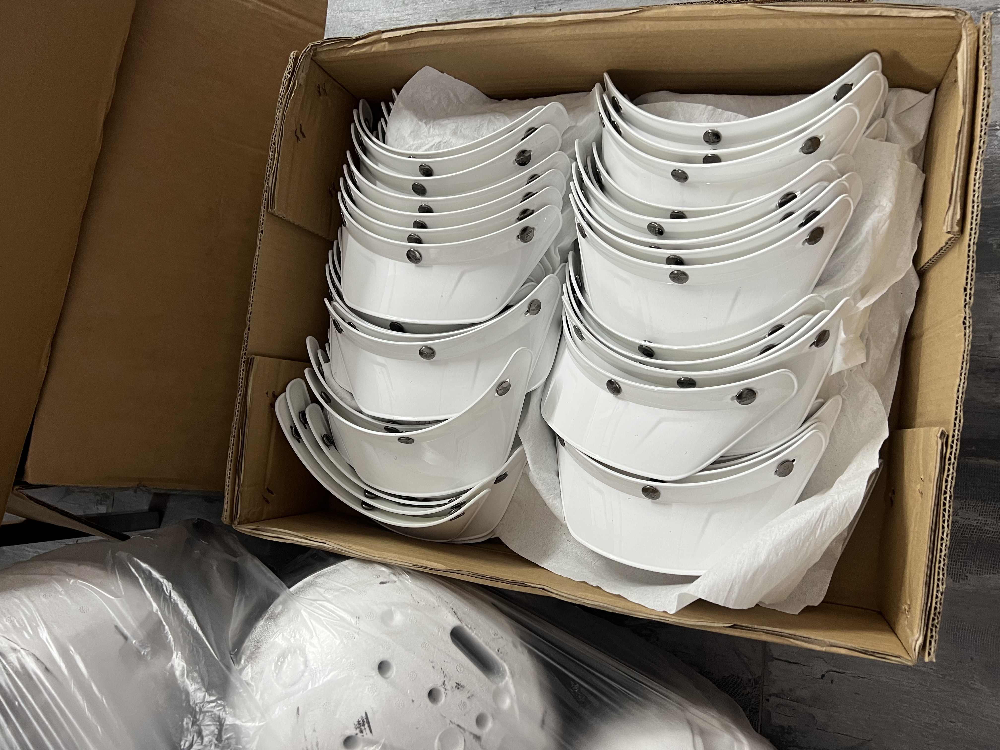

Taotao-owned factory-visit photo. It illustrates why contents need checking; it is not evidence for a particular shipment or supplier.
Your supplier says the order is ready to ship and sends one total quantity. Can you release the balance and booking? First check whether the purchase order, commercial invoice, packing list and sampled carton contents describe the same goods. This is especially useful when an order mixes sizes, colors or accessories.
The U.S. International Trade Administration says an export packing list itemizes package contents, package count, weights and marks, and is not a substitute for the commercial invoice. U.S. Customs and Border Protection separately identifies merchandise description, quantity and value among commercial-invoice entry information. Those are official document purposes; the buyer's additional model-level check below is a Taotao procurement control, not a universal customs rule.
Build a four-way reconciliation
| Record | Match before release | Ask for if missing |
|---|---|---|
| Purchase order | Model/revision, size or variant, ordered units and agreed accessories | Approved change record for any substitution |
| Commercial invoice | Seller, buyer, description, quantity and value against the order | Corrected invoice where a material field differs |
| Packing list | Carton number, contents by SKU/size, units per carton, total cartons, weight and marks | Carton-level breakdown, not a single grand total |
| Physical check | Selected sealed or opened cartons against their marks and listed contents | Dated photos or independent pre-shipment inspection scoped to the order |
For example, if an order lists two helmet sizes, a packing list that says only “100 helmets” cannot tell the buyer whether the size split was packed correctly. The number is hypothetical; it is not a Taotao shipment or supplier performance claim. The same method applies to door hardware finishes, pet-product variants and other multi-SKU orders.
How to verify without over-reading a photo
- Ask for the final invoice and packing list in one version-controlled set. Compare seller identity, order number, product description and unit totals.
- Request a carton-number map showing the variant and quantity in each carton. Select carton numbers yourself for a limited spot check; ask for date-stamped opening photos or commission an independent inspection if the risk justifies it.
- Reconcile any discrepancy in writing before booking or releasing the remaining payment. Record who approved the change and which document version is final.
A sample of cartons does not prove every carton is correct. A photo of loose components does not prove the finished product, certification or actual dispatch quantity. If market-specific compliance is relevant, check the exact model's evidence separately.
Continue, pause or escalate
- Continue: order, invoice, packing list and scoped physical check align; the final document set is retained.
- Pause: carton IDs, size mix or invoice description are incomplete. Ask the supplier to correct the record before release.
- Escalate: the goods or seller materially differ from the approved order, or repeated corrections cannot be explained. Consider independent inspection and commercial review before paying or shipping.
My former corporate-banking work informs this habit of reconciling authorized documents and observable facts; Taotao has no access to private bank records and this check is not a financial opinion.
Official references: U.S. International Trade Administration, Common Export Documents; Packing List; U.S. CBP commercial-invoice requirements. Explore our helmet and visor category or other product categories for the products this method can support.